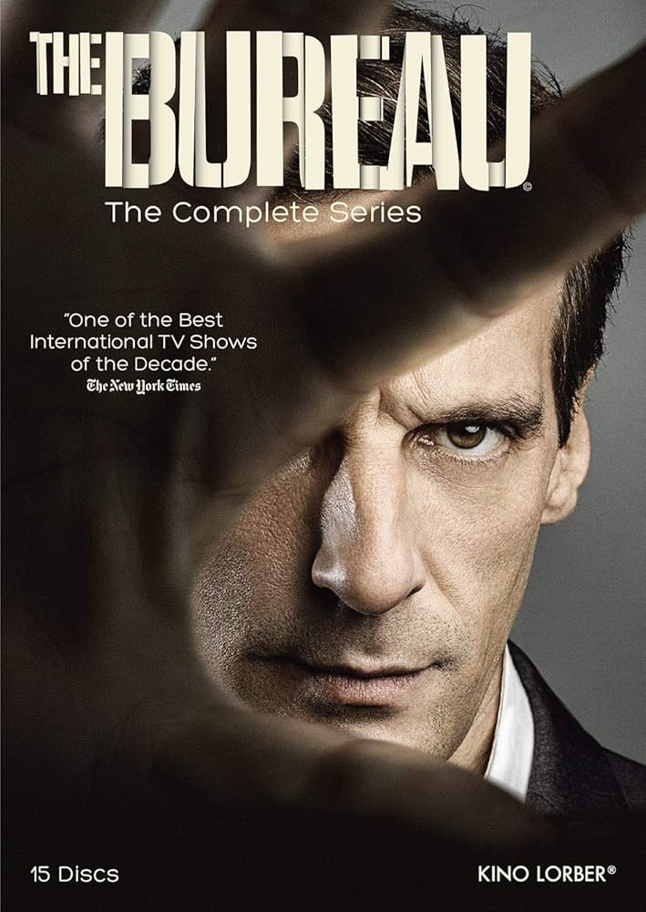

1) Le Bureau des Légendes (The Bureau)
This series was my first real introduction to French television, and it left a deep impression on me. I didn’t discover it through any big hype or marketing push; I stumbled upon it while searching for a spy drama that felt more realistic than the usual English-language fare. From the very first episode, I could tell it was something special, grounded in a reality that slicker shows often miss. Instead of high-tech gadgets and over-the-top action, it offers a glimpse into the subtle, everyday grind of spycraft. By the time I finished the first season, I knew I had found exactly what I had been looking for.
Le Bureau des Légendes follows a team of undercover agents who live under false identities for years at a time, fully immersing themselves in their cover stories. These are not short assignments that last a few weeks or months—these agents essentially build second lives from the ground up. They establish careers, friendships, and even romantic relationships, all fabricated to support their cover. The level of detail is incredible: every hobby, every childhood anecdote they share is part of the lie they've constructed. And the longer they remain undercover, the more those lies start to seep into their own sense of self. After years in the field, some agents find it hard to remember who they were before their alias took over.
What makes the series truly special is how patient and unhurried it is in its storytelling. There is no rush to wow the audience with explosive action scenes or high-stakes twists at every turn. Instead, the show illustrates that surveillance often takes time—hours of watching and waiting when nothing obvious happens. Operations sometimes fail not because of villainous masterminds, but because of mundane errors or sheer bad luck. A misplaced document or a brief slip in an alias can end up unraveling months of work, and the series takes its time showing how those failures unfold.
Those small mistakes have large consequences, and the show handles them with a quiet realism. The writing emphasizes how the grind of intelligence work slowly wears people down over the years, rather than making it look heroic. By avoiding the usual glorification of spy work, the series instead highlights the toll espionage takes on the human psyche—the stress, the creeping paranoia, and the erosion of one’s identity that comes from living so many lies. It's a perspective that few spy shows take, and it makes the drama here feel both engrossing and unsettling.
This is definitely not a show for anyone looking for action-heavy entertainment or glossy, over-the-top spy antics. You won't find high-speed chases or gimmicky gadgets here. Instead, the excitement comes from the slow build of tension and the intellectual chess match of each operation. It's geared toward viewers who want to understand how modern espionage really works and, more importantly, what it does to the people involved. The characters face moral dilemmas and personal sacrifices that feel far more intense than any explosive action scene. Among serious spy dramas, it’s hard to find anything more convincing or immersive than this. Once you get a taste of its authenticity, it’s tough to go back to more superficial spy fare.
